アーカイブ情報コレクション（AICs）¶
データセットやデジタルオブジェクトのコレクションは、大規模で異質な場合があるため、1つのデータセットやデジタルオブジェクトのコレクションが複数のAIPに分割されることがあります。このような場合、これらのAIPを知的結合して1つのアーカイブ情報コレクション（AIC）とできます。OAIS参照モデルでは、"コンテンツ情報が他のアーカイブ情報パッケージの集合体であるアーカイブ情報パッケージと定義されています。"（OAIS、1-9）
ArchivematicaでAICを作成する際、個々のAIPは、物理的に結合されません。AIC自体も別個のパッケージであり、メタデータ（具体的には、AICに属するすべてのAIPをリストした特殊なMETSファイル）のみを含んでいます。
このページでは：
アーカイブ情報コレクションの作成¶
AICの作成は、2つのステップからなります。まず、AIPを作成しなければなりません。AICを作成する前に、必要なAIPをすべて作成できれば最も簡単ですが、必要であれば、 AICを更新する 方法についての情報が以下にあります。
以下の方法は、AIPになる前に、各転送にAICに関するメタデータ（識別子）を追加します。これはオプションですが、AICを形成するAIPを検索するのに役立つ方法です。AIC識別子を使用しない場合は、AICに含まれるAIP（AIP名）を検索できる他の方法を使用する必要があります。AIC識別子を追加しない場合は、後でAICのコンポーネントAIPを 検索 するのが難しくなる可能性があることに注意してください。
第2段階は、AIC識別子（または他の検索パラメーター）を使って、複数のAIPをAICに接続します。
説明されている方法で、ユーザーは、転送処理中にAIC識別子を手動で入力する必要があります；しかし、 メタデータCSV を使って、AIC 識別子を追加することも可能です。この場合、CSV に dcterms.isPartOf というカラムを追加します。この方法では、ご希望の識別子を"AIC#"として付加する必要があります。これは、Archivematicaのメタデータフォームを使ってデータを入力する際に自動的に行われます。
ステップ1：AIP を作成¶
転送 を作成します。この転送は、任意のデータで構成でき、任意の転送タイプを使用して作成できます。
必要に応じて、転送のメタデータボタンをクリックして、転送にAIC識別子を追加します。これは、
Microservice: Add final metadataより前に行う必要があります。
{kind=link}
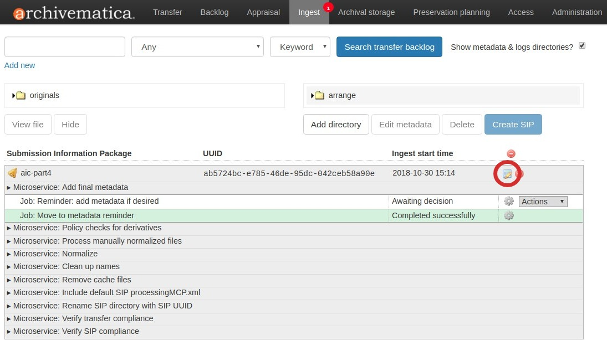
注釈
Archivematicaは、メタデータの追加を忘れないように設定できます。 処理設定 で、フィールド Reminder: add metadata if desired を None に設定します。
メタデータボタンをクリックすると、転送のメタデータ情報画面が開いたはずです。メタデータの見出しの下で、 Add をクリックしてください。
{kind=link}
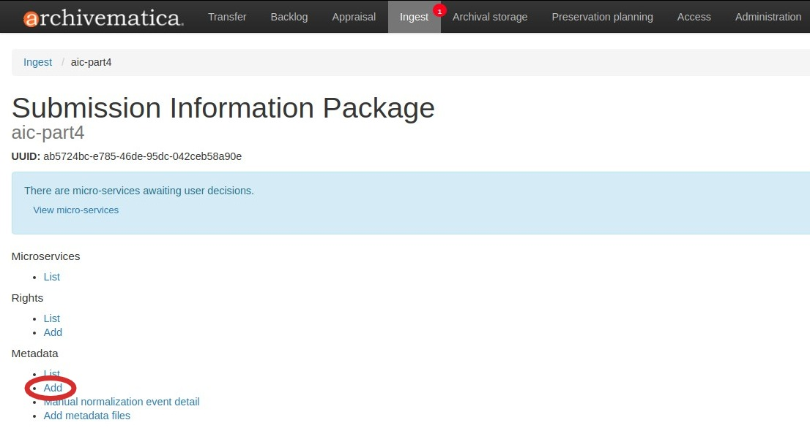
Part of AIC フィールドに、AIC識別子を入力します。必要であれば、転送のための他の説明メタデータを追加もできます。
{kind=link}
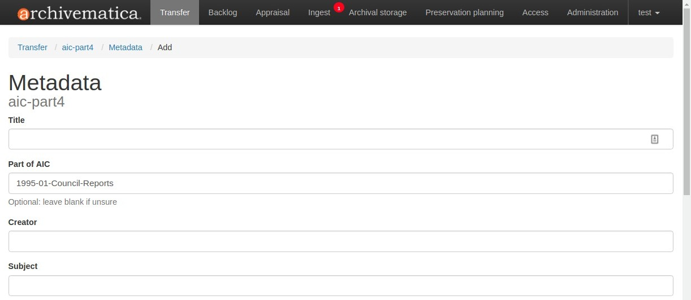
Tip
AICの識別子は、文字と数字を自由に組み合わせることができます。
画面下部で、 作成 をクリックします。
AIPの処理を終了し、ストレージに置きます。
ステップ1から6を繰り返して、必要な数のAIPを作成します。AIC識別子を使用してAIPを接続する予定の場合は、 AICの一部 フィールドに同じ番号を入力してください。すべてのAIPを作成したら、ステップ2に進み、AICを作成します。
ステップ2：AICの作成¶
すべてのAIPが保存されたら、Archival Storageタブをクリックします。
AICに含まれるAIPを検索します。ここでAICの識別子が役に立ちます。 AICの一部 に同じ値を持つすべてのAIPを検索するには、検索ボックスに
AIC#[identifier]を入力し、[identifier]を入力した識別子で置き換えます。検索パラメータとしてPart of AICを選択します。
{kind=link}
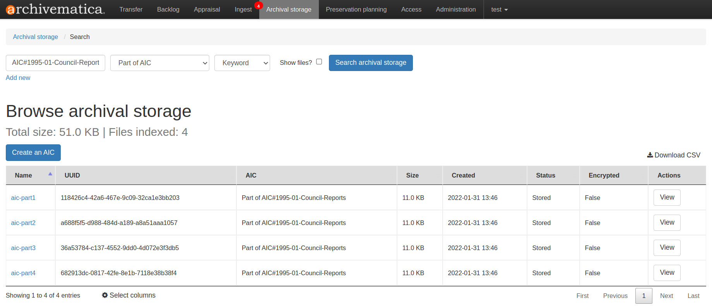
AICに含めたいAIPのみが検索結果に含まれていることを確認したら、 AICを作成 をクリックします。
{kind=link}
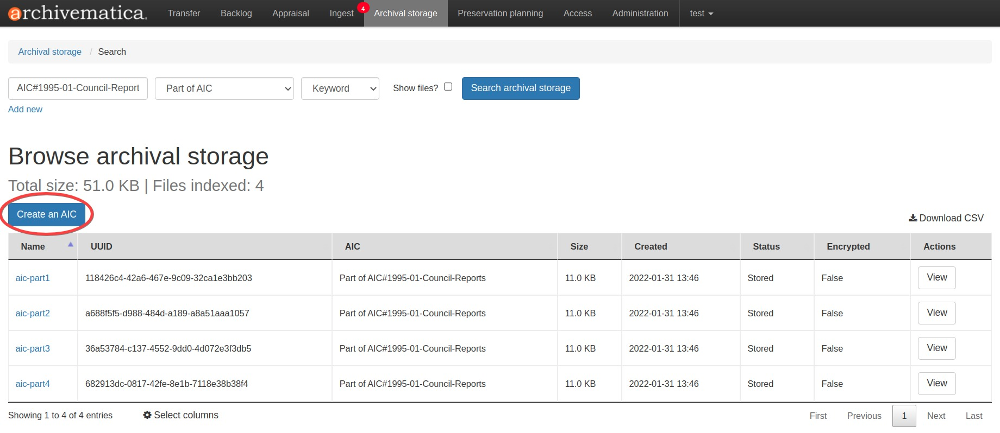
AICのメタデータ入力テンプレートが表示されます。最低限、AICに識別子を付ける必要があります。Archivematicaは、この識別子を、これから生成するAICパッケージの名前として使用します。必要であれば、このフォームを使ってAICに関するメタデータを追加もできます。入力が終わったら、メタデータ入力テンプレートの下にある Create をクリックします。
{kind=link}
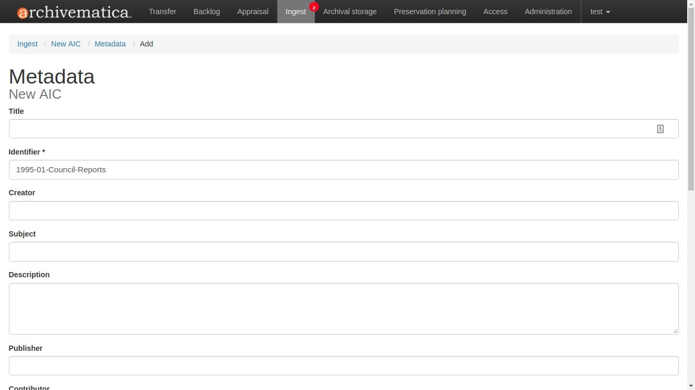
インジェストタブに移動します。AICが新しいインジェストとして表示されます。それを承認します。
{kind=link}
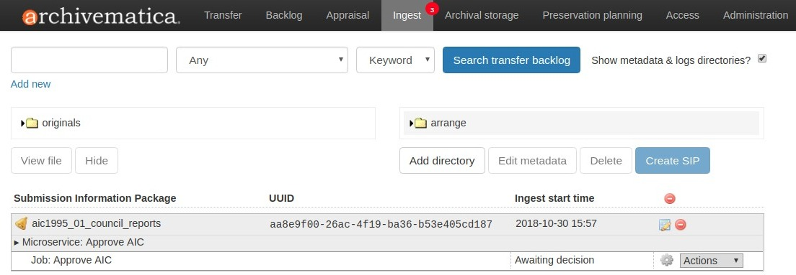
AICの処理を続け、アーカイブストレージに入れます。
AICの検索¶
AICまたはAICを構成するAIPのいずれかを取り出す必要がある場合は、Archival Storageタブで取り出すことができます。
Archival Storageタブを閲覧中にAIC情報を見るには、結果表の下にある Select columns をクリックし、 AIC 行をハイライトします。検索結果には、AIPがAICに含まれるかどうか（あるいはそれ自体がAICであるかどうか）の情報を提供する列 AIC が含まれるようになりました。
{kind=link}
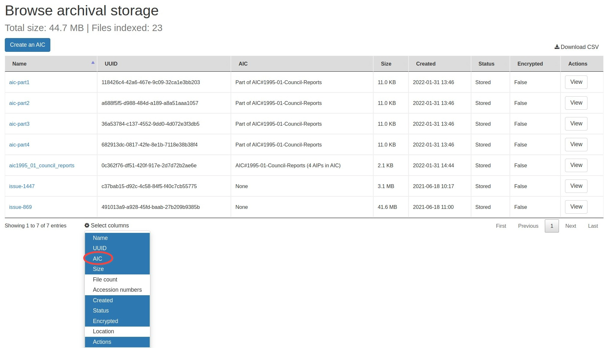
上のスクリーンショットでは、最初の4つのAIPがAICの一部であるのに対し、5番目の結果はAIC自体であることに注意してください。最後の2つの結果はAICでもAICの一部でもありません。これはワイルドカード検索であり、現在アーカイブストレージにあるものをすべて表示します。
特定のAICに属するAIPを検索するには、検索ボックスに AIC#[identifier] を入力し、 [identifier] をAIP作成時に入力した識別子で置き換えます（上記の ステップ1 を参照）。検索パラメーターとして Part of AIC を選択します。
{kind=link}
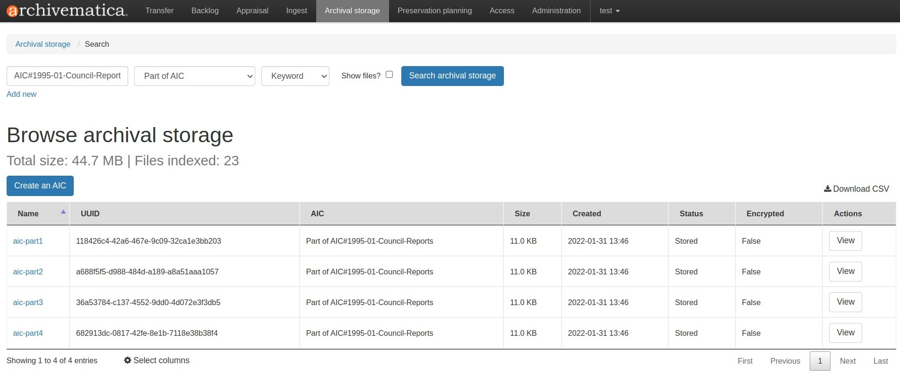
注釈
上記の ステップ 1 で説明したように、各 AIP に AIC 識別子を追加して AIC を作成しなかった場合、AIC のコンポーネント AIP を見つけるのがより困難になる可能性があります。AIC パッケージをダウンロードし、その中に含まれる METSファイルを確認して、AIC を構成するAIPを確認する必要がある場合があります。
AICの識別子を使って特定のAICを検索できます。検索ボックスに AIC#[identifier] と入力し、 [identifier] をAICの識別子に置き換えます。検索パラメーターとして AIC identifier を選択します。
{kind=link}
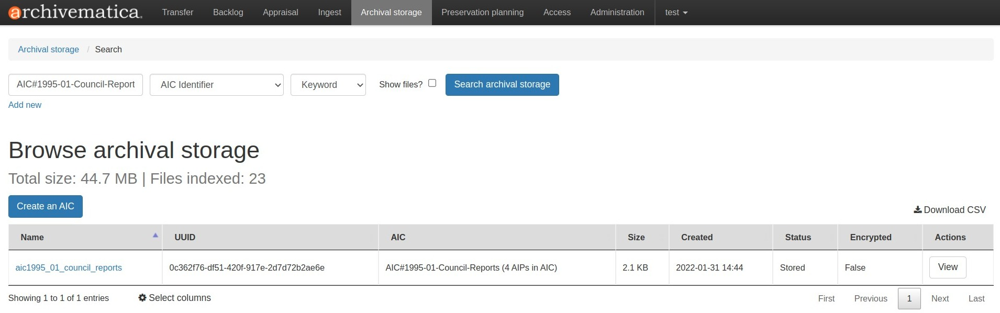
AICとそれに属するAIPの両方を見たい場合は、ブール検索を行うことができます。
検索ボックスに
AIC#[identifier]を入力し、[identifier]をAIP作成時に入力した識別子に置き換えて、AIPを検索します。検索パラメーターとしてPart of AICを選択します。検索ボックスの下にある 新規追加 をクリックして2番目の検索クエリを追加します
ブーリアン演算子を
ORに変更します。2行目のクエリ行で、検索ボックスに
AIC#[identifier]と入力し、[identifier]をAICの識別子に置き換えます。検索パラメーターとしてAIC identifierを選択します。
{kind=link}
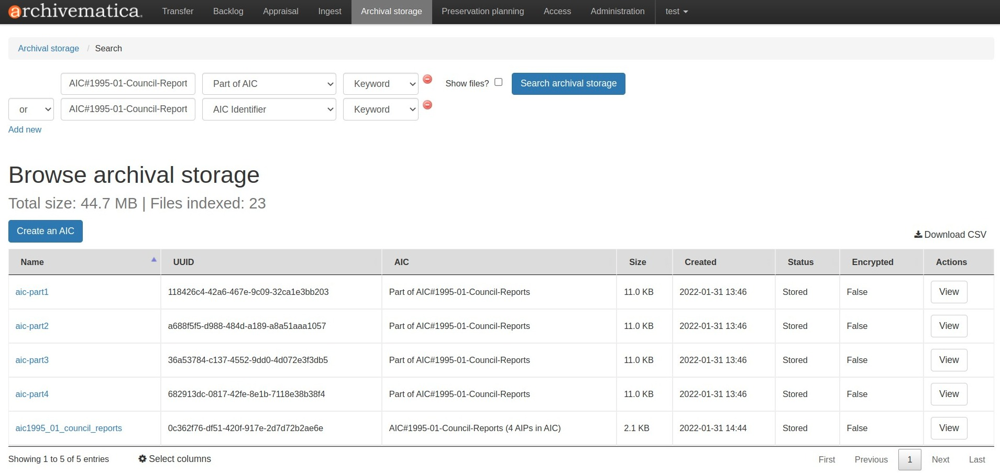
AICの更新¶
AICを更新する最も一般的な理由は、AIPを追加することです。そのためには、オリジナルのAICを削除し、新しいAICを作成しなければなりません。
AIC の削除は、AIP の削除と同じ方法で行います。AIP の削除の詳細については、 AIP の削除 を参照してください。
新しい AIC を作成するには、上記の手順に従って、 AIC を作成 します。
AICの内容¶
AIC は AIP に似たパッケージですが、メタデータのみを含めます。基本的な AIC は、::と同じ構造になります
my_aic-ea0f2429-7d9f-49df-8e5a-2e6db0fb5fce/
├── bag-info.txt
├── bagit.txt
├── data
│ ├── metadata
│ │ └── METS.7a3a0b11-fbdd-484d-a58c-7d66273c3f23.xml
│ └── METS.ea0f2429-7d9f-49df-8e5a-2e6db0fb5fce.xml
├── manifest-sha256.txt
└── tagmanifest-md5.txt
AIP と同様に、AIC も BagIt の仕様に従ってバッグされます。Archivematica が BagIt をどのように実装しているかについては、 AIP 構造 を参照してください。
AIC には 2 つの METS ファイルが含まれています。最初のものは data サブディレクトリにあり、AICパッケージ自体のMETSファイルで、AIP METSファイルに類似しています。
data/metadata 内にある2番目のMETSファイルには、AICとそのコンポーネントAIPに関する情報が含まれています。AICの説明メタデータセクション (dmdSec) には、AICの作成時に追加されたDublin Coreが含まれています。
<mets:dmdSec ID="dmdSec_1">
<mets:mdWrap MDTYPE="DC">
<mets:xmlData>
<dcterms:dublincore xmlns:dc="http://purl.org/dc/elements/1.1/" xmlns:dcterms="http://purl.org/dc/terms/" xsi:schemaLocation="http://purl.org/dc/terms/ http://dublincore.org/schemas/xmls/qdc/2008/02/11/dcterms.xsd">
<dc:title>My AIC</dc:title>
<dc:type>Archival Information Collection</dc:type>
<dc:identifier>AIC#1995-01-Council-Reports</dc:identifier>
<dcterms:extent>3 AIPs</dcterms:extent>
</dcterms:dublincore>
</mets:xmlData>
</mets:mdWrap>
</mets:dmdSec>
METSファイルは、どのAIPがこのAICに含まれているかも示しています。AIC のコンポーネント AIP は、METS ファイルの fileSec です.
<mets:fileSec>
<mets:fileGrp>
<mets:file ID="aic-part2-d6fcffe4-5eef-4ae8-a0b8-b848ed7d7851"/>
<mets:file ID="aic-part1-b7de7bb6-e263-4a6f-8ae6-d0c9bff04365"/>
<mets:file ID="aic-part3-16f43cd7-4b2d-4a32-bee3-138adade4399"/>
</mets:fileGrp>
</mets:fileSec>
この情報は、METS の論理構造マップ（logical structMap）にも表示されます。論理 structMap は AIC の階層表示であり、記述される項目間の関係（すなわち、コンポーネント AIP がこの AIC の一部であること）を示すことを意図しています。
<mets:structMap TYPE="logical">
<mets:div TYPE="Archival Information Collection" DMDID="dmdSec_1">
<mets:div LABEL="aic-part2">
<mets:fptr FILEID="aic-part2-d6fcffe4-5eef-4ae8-a0b8-b848ed7d7851"/>
</mets:div>
<mets:div LABEL="aic-part1">
<mets:fptr FILEID="aic-part1-b7de7bb6-e263-4a6f-8ae6-d0c9bff04365"/>
</mets:div>
<mets:div LABEL="aic-part3">
<mets:fptr FILEID="aic-part3-16f43cd7-4b2d-4a32-bee3-138adade4399"/>
</mets:div>
</mets:div>
</mets:structMap>